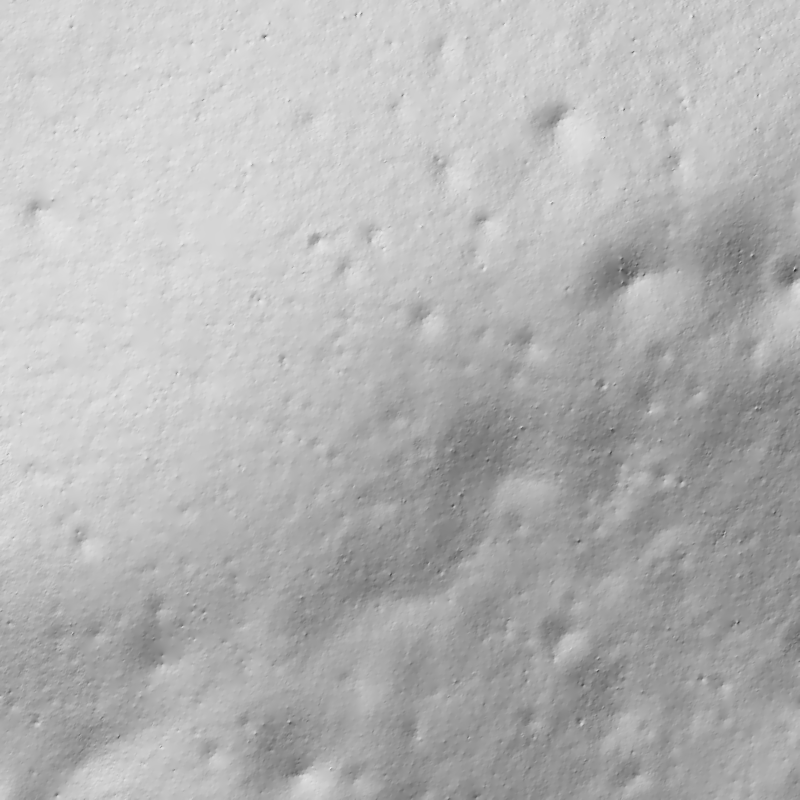
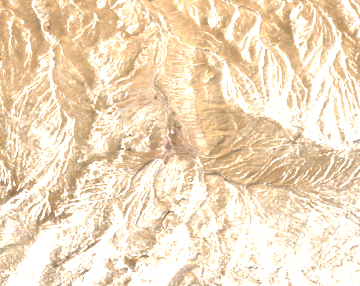

SIMILITUDE / Engineering field dossier
Plan the field test.
Keep the evidence.
Build a lunar rover test brief from observed terrain. Compare study footprints, record what remains unmeasured, and prepare the site survey.
Connecting Ridge / Lunar south pole / 4 km study window
Planning draft. Field readiness requires a site survey.


Similar slope statistics. Soil strength, small obstacles and site access still need evidence.
- 01 Mission
- 02 Test objectives
- 03 Compare candidates
- 04 Build campaign
- 05 Export evidence
Define the test objectives.
Pick the evidence your review needs. Unmeasured variables stay visible throughout the campaign.
Compare the study footprints.
These are study footprints. A matching variable does not establish access, route safety or test readiness.
Modelled evidence Survey or setup required
Build campaign 0Build the review draft.
Adding a footprint can add evidence. The remaining measurements become your reconnaissance checklist.
Test matrix
No footprints selectedEvidence is tracked per variable and footprint. Entries from different places do not establish a joint test environment.
Your notes are saved in this browser. No route or lighting window has been calculated.
Reconnaissance checklist
Export the evidence record.
Share the choices and the uncertainty together. Every exported entry retains its source record.
Connecting Ridge · navigation review
Choose a study footprint to prepare your brief.
- 01 Selected footprints and test matrix
- 02 Proposed route and assumptions
- 03 Data sources and evidence limits
- 04 Reconnaissance checklist
HTML brief for reading or printing to PDF. JSON for the complete source records.
Select at least one footprint and one objective to enable downloads.
Field test planning / Connecting Ridge
Navigation campaign
Evidence boundary
Terrain and shadow models support site screening. Hardware performance, site permission and operational readiness remain unverified.